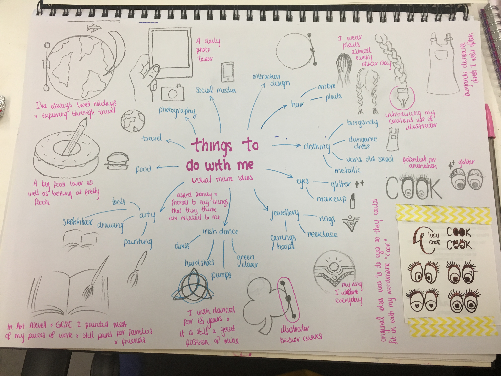

Personal Branding
Building my personal brand and visual identity, from monogram sketches to a digital set of brand guidelines.
Research Notes





View Brand Guidelines
Research Notes
Building my personal brand and visual identity, from monogram sketches to a digital set of brand guidelines.
Research Notes